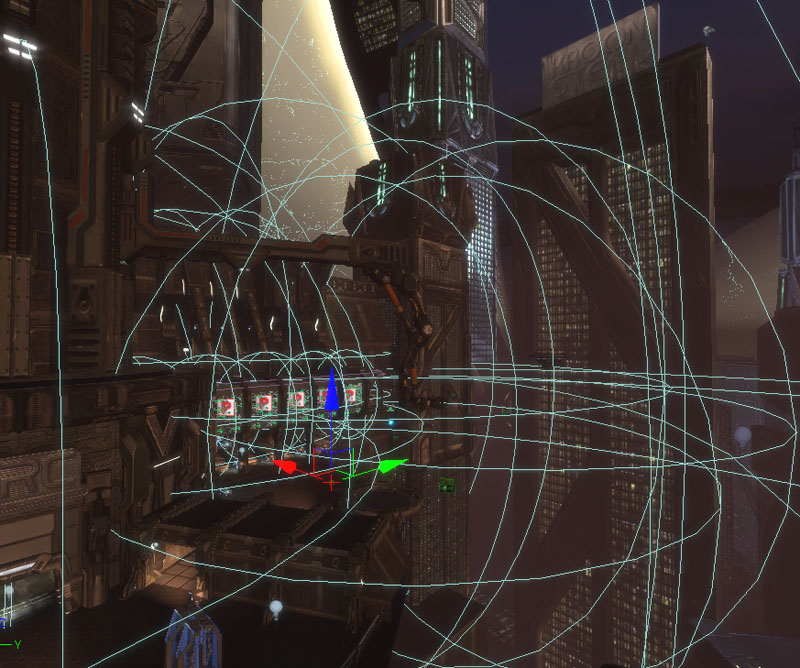
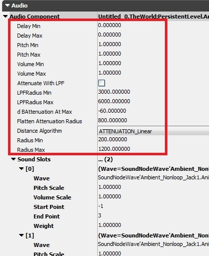
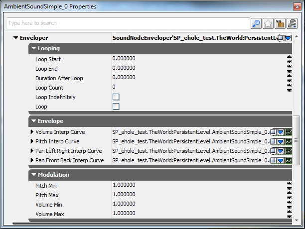
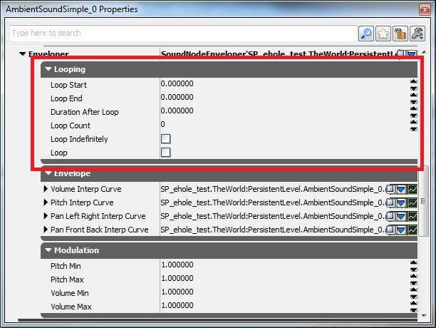
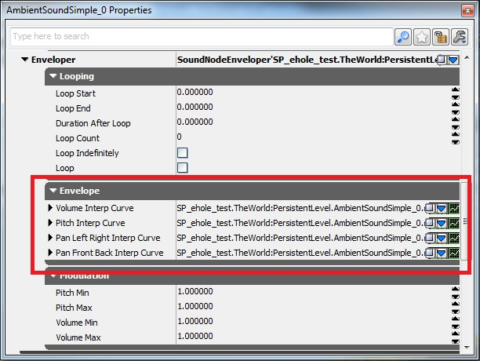
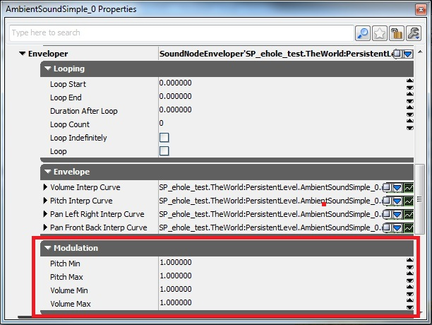
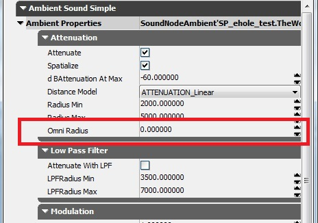
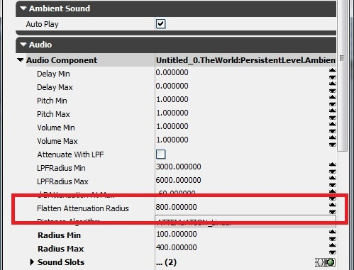

UDN
Search public documentation:
UsingSoundActorsCH
English Translation
日本語訳
한국어
Interested in the Unreal Engine?
Visit the Unreal Technology site.
Looking for jobs and company info?
Check out the Epic games site.
Questions about support via UDN?
Contact the UDN Staff
日本語訳
한국어
Interested in the Unreal Engine?
Visit the Unreal Technology site.
Looking for jobs and company info?
Check out the Epic games site.
Questions about support via UDN?
Contact the UDN Staff
声音 Actor
概述
AmbientSound Actor
 这个 Actor 大多数时候用于触发环境的循环声音但是它也可以触发非循环声音。当收听者进入在 SoundCue 编辑器中定义的半径时，将会触发那个 Actor 一次。如果使用了 Looping Node（循环节点），它将在半径内重复播放，并且针对在 SoundCue 中的所有属性做出反应。如果没有使用 Looping Node（循环节点），当收听者进入到半径内时音频文件触发一次。
这个 Actor 大多数时候用于触发环境的循环声音但是它也可以触发非循环声音。当收听者进入在 SoundCue 编辑器中定义的半径时，将会触发那个 Actor 一次。如果使用了 Looping Node（循环节点），它将在半径内重复播放，并且针对在 SoundCue 中的所有属性做出反应。如果没有使用 Looping Node（循环节点），当收听者进入到半径内时音频文件触发一次。
 在这个 actor 上的唯一可控制的参数是 Pitch（音调）和 Volume（音量）。Radii（半径）必须在 SoundCue 中进行定义，在编辑器中没有它的图形表示。使用这个 actor 来创建复杂的声音比半径的 控制/可视化 更加值得保留。如果您想在多个使用不同半径设置的位置触发同一个 Cue ，那么您需要为每个实例创建 Cue 的副本。
在这个 actor 上的唯一可控制的参数是 Pitch（音调）和 Volume（音量）。Radii（半径）必须在 SoundCue 中进行定义，在编辑器中没有它的图形表示。使用这个 actor 来创建复杂的声音比半径的 控制/可视化 更加值得保留。如果您想在多个使用不同半径设置的位置触发同一个 Cue ，那么您需要为每个实例创建 Cue 的副本。
AmbientSoundSimple Actor
 这允许基于每个 Actor 控制 Attenuation（衰减）、Spatialization（空间化）、Radii（半径）和 Modulation（调制）。相关的 Volume（音量）和 Pitch（音调）调整通过使用 Volume Modulation（音量调制）和 Pitch Modulation（音量调制）来完成。Min\Max（最大\最小）半径可以在编辑器中被描画为球体，并且可以通过点击拖拽Red\Green\Blue（红\绿\蓝）色的 Actor 箭头来实时地调整球体大小。
这允许基于每个 Actor 控制 Attenuation（衰减）、Spatialization（空间化）、Radii（半径）和 Modulation（调制）。相关的 Volume（音量）和 Pitch（音调）调整通过使用 Volume Modulation（音量调制）和 Pitch Modulation（音量调制）来完成。Min\Max（最大\最小）半径可以在编辑器中被描画为球体，并且可以通过点击拖拽Red\Green\Blue（红\绿\蓝）色的 Actor 箭头来实时地调整球体大小。
AmbientSoundNonLoop Actor

- Delay Time（延迟时间）控制了每次触发之间保持寂静的 Minimum（最大）和 Maximum（最小）时间量（以秒为单位）。每次出发一个音频文件时，它将会随机地在那个范围内获取一个延迟时间。
- Volume Modulation（音量调制）+ Pitch Modulation（音调调制）用于定义全部的 Actor 的 Volume（音量）+ Pitch（音调）。
- Sound Slots（声音插槽）用于添加每个 Wav 文件，可以通过点击位于 SoundSlot 标签右侧的小绿色按钮来完成。每个 Sound Slots（声音插槽）具有针对每个插槽的 volume（音量）、pitch（音调）和 weight（权重）属性。weight（权重）控制着在 Actor 中的一个 Sound Slot（声音插槽）相对于其它的 Sound Slots（声音插槽）被触发的可能性大小。
- 位于 Actor 窗口底部的 `Wave' 插槽可以被忽略，不应用它。
- Min\Max（最大\最小）半径可以在编辑器中被描画为球体，并且可以通过点击拖拽Red\Green\Blue（红\绿\蓝）色的 Actor 箭头来实时地调整球体大小。

选中了地图中的所有 AmbientSoundSimple + AmbientSoundNonLoop Actors。AmbientSoundSpline Actor
- 打开内容浏览器 (Content Browser)，选择Actor类 (Actor Classes) 选项卡，展开 Keypoint -> AmbientSoundSpline

- 选取你想要创建的声音（Simple、NonLoop或MultiCue），然后将它拖放到游戏世界中
- 在要传播的声音上绘制曲线。最佳可行方法是在视图中选择TOP视图。然后在actor图标中心的白色方块上按住左鼠标按钮。在按住左鼠标按钮的时候，你将必须按下PERIOD，然后移动你的鼠标添加一个新的点。然后你会看到一个新的点已经创建完成。
- 如果你想要删除你的样条曲线上的多余点，你需要使用退格键 (BACKSPACE)。只可以从最后一个点开始向第一个点方向进行删除。
- 如果你想要更改你的样条曲线的形状，只需选择其中一个白色的方块然后将它移动到相应的位置。
 样条曲线上的点：
样条曲线上的点： - 蓝色的点显示的是虚拟扬声器的位置。
- 白色 - 样条曲线可以控制点。
- 淡紫色 - 声音范围已确定的点。
- 绿色 - 点 在监听器监听范围内。
- 红色的圆代表的是监听器的监听范围。红色的点代表的是监听器的位置（可以拖拽）。
- AmbientSoundSplineSimple - 具有常规AmbientSoundSimple的属性
- AmbientSoundSimpleSplineNonLoop - 具有常规AmbientSoundNonLoop的属性
- AmbientSoundSplineMultiCue - 具有常规AmbientSound的属性

下面你将会看到有关那些可以在每种样条曲线actor中找到的属性的描述- Edited Slot - 会在样条曲线上显示当前进行编辑的声音插槽 (Sound Slot)
- Spline Component - 你可以通过展开 环境声音样条曲线 (Ambient Sound Spline) -> 样条曲线组件 (Spline Component) -> 样条曲线信息 (Spline Info) -> 点 (Points) 来更改弯曲类型
- Sound Slots -> Start Point - 将样条曲线放置在声音开始跟踪摄像机的地方。-1 = 样条曲线上的第一个点
- Sound Slots -> End Point - 将样条曲线放置在结束跟踪摄像机的地方。-1 = 样条曲线上的最后一个点
 Listener Scope Radius - 会显示你可以听到样条曲线上的声音的半径范围。不能小于RadiusMax。它也是可视的。通常在你创建一个Spline Sound Actor后，你将会看到一个红色的大圈，中间是一个红色的方点，在区域中的某个地方。这个圈代表摄像机可以听到的范围，你可以使用鼠标移动它。还有一个蓝色点，它代表供摄像机使用的虚拟声源。这是发出真正声音的地方。当你靠近红色圆圈靠得足够近的时候在当前进行编辑的插槽上移动的绿色点代表摄像机可以听到的范围。
Listener Scope Radius - 会显示你可以听到样条曲线上的声音的半径范围。不能小于RadiusMax。它也是可视的。通常在你创建一个Spline Sound Actor后，你将会看到一个红色的大圈，中间是一个红色的方点，在区域中的某个地方。这个圈代表摄像机可以听到的范围，你可以使用鼠标移动它。还有一个蓝色点，它代表供摄像机使用的虚拟声源。这是发出真正声音的地方。当你靠近红色圆圈靠得足够近的时候在当前进行编辑的插槽上移动的绿色点代表摄像机可以听到的范围。

ReverbVolume（混响音量）
SoundTriggeringVolume（声音触发音量）
- 使用画刷构建器创建一个体积。创建完成后，请通过鼠标右击体积选择器来选取 SoundTriggeringVolume
- 上一步完成后，请按下 F4（属性），然后在你选中 SoundTriggeringVolume 的情况下点击挂锁符号
- 标记（在视窗或场景管理器中）你想要触发的actor，然后按“在内容浏览器中使用选中的对象 (use selected object in content browser)”（绿色箭头符号）
- 这样会将场景actor添加到 SoundTriggeringVolume
- 一旦你输入之后，将会播放每个调用的SoundActor。
- 在播放完之后，这个SoundActor将会被移动到垃圾回收站（除非它是一个循环声音）。如果因为某些原因，你需要将这个actor放在内存中，那么请取消勾选actor属性中的‘播放后删除 (Delete After Play)’标记

声音Actor属性
Enveloper（封袋）
- 将选中的SoundActor插入到游戏世界中
- 打开它的属性
- 在Enveloper插槽中选择‘创建新对象 (create new object)’

- 将会使用下面3个属性创建一个Enveloper模块： Looping（循环）、Envelope（封袋）、Modulation（调制）

Enveloper属性： Looping（循环） ：- Loop Start - 循环的封袋起始点
- Loop Start - 循环的封袋结束点
- Duration After Loop - 某段循环结束后的淡出时间
- Loop Count - 循环次数
- Loop Indefinately - 切换 是/否
- Loop - 切换 是/否（专门设计与Loop Count（循环次数）切换结合使用）

Envelope（封袋） 。点击右边的绿色图表符号调出图形界面：- Volume Interp Curve - 你可以定义的音量封袋。展开结构直到看到 'Points'。其中： InVal = 秒数， OutVal = 音量合成器， InterpMode = 曲线的类型
- PitchInterpCurve - 你可以定义的音调封袋。展开结构直到看到 'Points' 。其中： InVal_= 秒数， _OutVal = 音调合成器， InterpMode = 曲线的类型
- PanLeftRightInterCurve - 你可以定义的平移封袋。展开结构直到看到 'Points' 。其中： InVal_= 秒数， _OutVal = 平移合成器 (1 = 100% 左, 0 = 中心, -1 = 100% 右。与单声道声音结合在一起使用，需要将actor上的Spatliaze标记关闭）， InterpMode = 曲线的类型
- PanFrontBackInterCurve - 你可以定义的平移封袋。展开结构直到看到 'Points' 。其中： InVal_= 秒数， _OutVal = 平移合成器 (1 = 100% 前, 0 = 中心, -1 = 100% 后。与单声道声音结合在一起使用，要求将actor上的'Spatialize'标记关闭）， InterpMode = 曲线的类型

Modulation(调制) 。在所有封袋上定义的点中随机选取预定义值：- PitchMin - 播放的音调最小值
- PitchMax - 播放的音调最大值
- VolumeMin - 播放的音量最小值
- VolumeMax - 播放的音量最大值

OmniRadius（平整衰减半径）

在与AmbientSoundSpline actor结合在一起使用的时候，它被称为 Flatten Attenuation Radius（平整衰减半径）